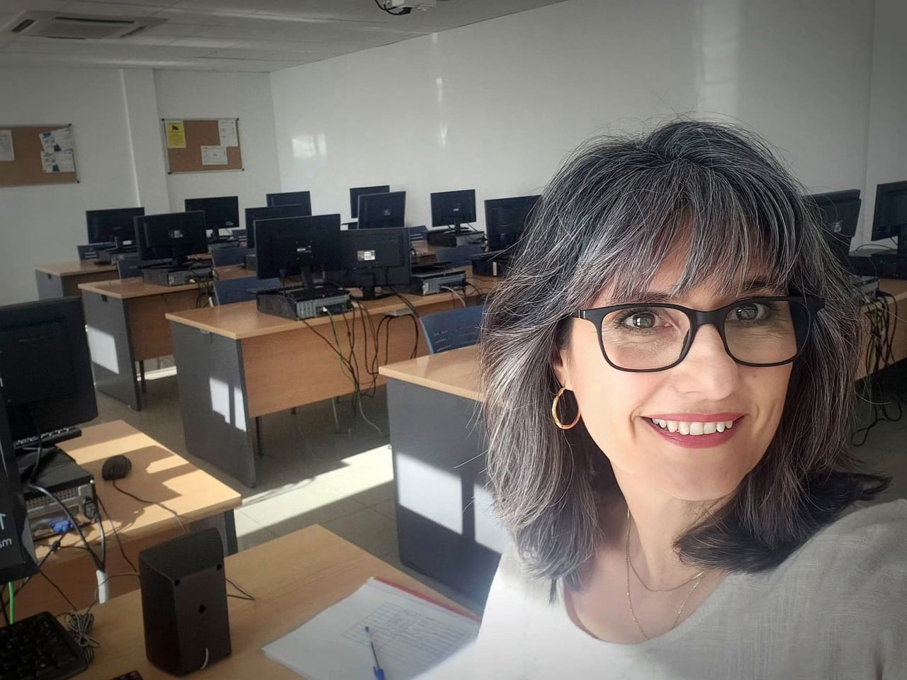

Laetitia Christelle Padilla
Docente nativa de francés para centros educativos, academias y empresas en Lanzarote
Diseño e imparto cursos de francés a la medida de su centro: del A1 al B2, presenciales, online o mixtos, con materiales propios y aula virtual.

Qué puedo aportar a su centro
Cursos por niveles
Grupos del A1 al B2 según el Marco Común Europeo, con una programación adaptada a su calendario.
DELF y DALF
Preparación de los diplomas oficiales de francés DELF y DALF.
Materiales digitales
Diseño de materiales propios y contenidos SCORM, con aula virtual para el alumnado.
Presencial, online o mixta
En su centro en Lanzarote, a distancia o combinando ambas modalidades.

Soy Laetitia...
Soy profesora nativa de francés y colaboro con centros educativos, academias y empresas que necesitan una docente de francés.
He trabajado con alumnado de ESO y Bachillerato, con adultos y con profesionales del sector turístico, siempre con el mismo objetivo: que el francés se use de verdad, no solo se estudie.
Estoy acreditada para impartir francés del A1 al B2, cuento con el certificado de docencia y he impartido formación en centros como Focan, Microsistemas e Irish Academy.
Otros servicios
Además de la formación, ofrezco apoyo lingüístico francés–español y acompañamiento cultural en Lanzarote.